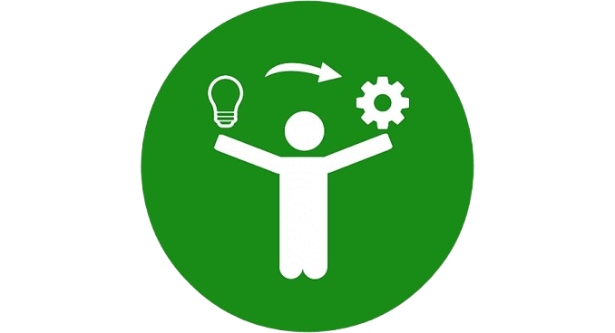
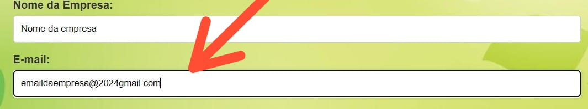
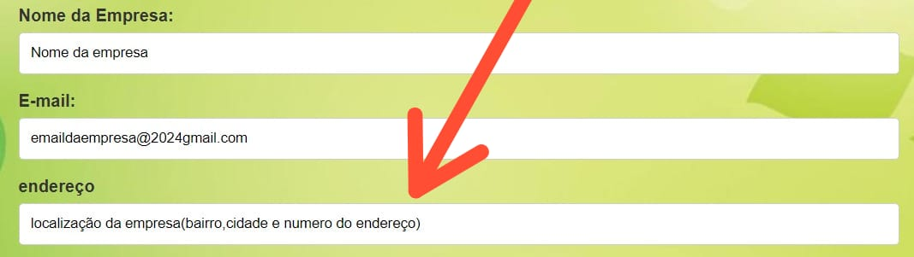
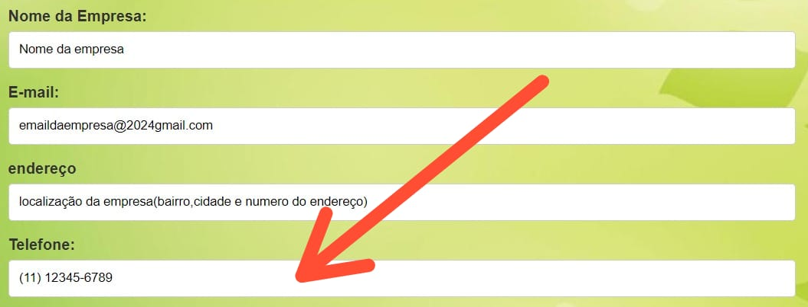
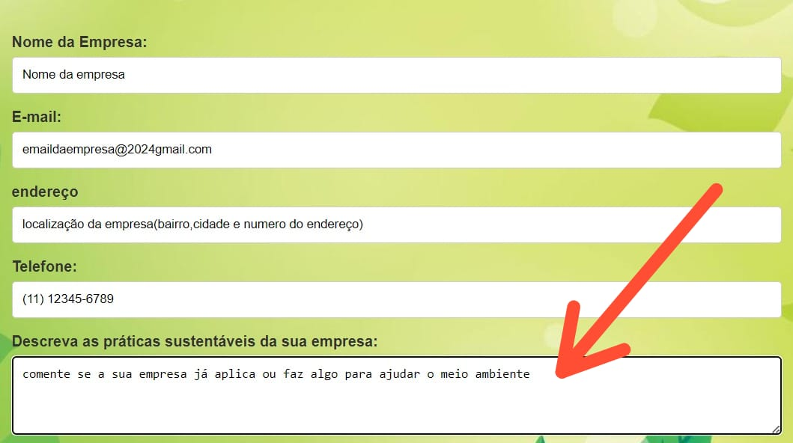

O Projeto Folha Verde funciona por meio de um processo estruturado, que envolve várias etapas para garantir uma implementação eficaz de áreas verdes nas empresas. O objetivo principal é transformar o ambiente corporativo ao integrar a natureza ao cotidiano dos colaboradores, proporcionando benefícios à saúde, produtividade e sustentabilidade. Veja como o projeto funcionará em detalhes:
Detalhes do Projeto Folha Verde: Sustentabilidade e Bem-Estar nas Empresas
O Projeto Folha Verde é uma iniciativa inovadora e sustentável, que visa transformar ambientes empresariais ao integrar a natureza e os jardins aos espaços de trabalho. O foco principal do projeto é criar áreas verdes que ajudem a melhorar a qualidade do ar, a temperatura e o bem-estar geral dos colaboradores. Além disso, o projeto contribui para a expansão da vegetação em áreas urbanas, onde a presença de plantas é geralmente limitada.

Objetivos do Projeto
O principal objetivo do Projeto Folha Verde é proporcionar às empresas uma maneira prática e acessível de se comprometerem com a sustentabilidade e o cuidado com o meio ambiente. Entre os objetivos mais específicos, destacam-se:
- Melhorar a qualidade do ar : As plantas são grandes purificadoras do ar, filtrando poluentes e aumentando a concentração de oxigênio, o que torna o ambiente de trabalho mais saudável.
- Criar um ambiente agradável : A presença de áreas verdes reduz o estresse, aumenta a sensação de bem-estar e pode melhorar a concentração e a produtividade dos colaboradores.
- Fortalecer o compromisso com a sustentabilidade : Empresas que adotam práticas sustentáveis como o "Projeto Folha Verde" demonstram responsabilidade social e ambiental, o que pode atrair mais clientes, parceiros e talentos.
Como a implementação funciona?

A implementação do Projeto Folha Verde segue algumas etapas essenciais para garantir que o espaço verde seja bem planejado e atenda às necessidades da empresa.
- Avaliação do Espaço: O primeiro passo é avaliar o espaço disponível na empresa. Isso inclui desde áreas externas, como jardins ou pátios, até áreas internas que podem acomodar plantas de interior, como recepções, salas de reunião ou até estações de trabalho.
- Planejamento Personalizado: Com base na avaliação, uma equipe especializada elabora um plano personalizado para a empresa. O plano considera os tipos de plantas mais adequadas ao ambiente, as condições climáticas e o nível de manutenção necessário.
- Implementação: A etapa de implementação inclui o planejamento das espécies escolhidas, a criação de jardins verticais, vasos distribuídos pelo escritório ou até a instalação de hortas comunitárias, onde os funcionários podem cultivar suas próprias plantas ou hortaliças.
- Manutenção e Suporte: Para garantir a saúde e a longevidade das áreas verdes, o Projeto Folha Verde oferece suporte contínuo, com orientações sobre supervisão, poda e outros cuidados essenciais.
Certificação verde
CONSISTE NA REALIZAÇÃO E AO MÉRITO DE PARTICIPAÇÃO ONDE HAVERÁ DOIS SELOS QUE SERAM USADOS PARA DETERMINAR A CONTRIBUIÇÃO E ADEQUAÇÃO COM O PROJETO
- O PRIMEIRO SELO SERIA USADO PARA DETERMINAR AS EMPRESAS QUE SÃO CONGRUENTES DO PROJETO O ECOSTAMP.
- O SEGUNDO SELO DETERMINARIA A CONTRIBUIÇÃO DAS EMPRESAS NA CAMPANHA, ONDE A PARTIR DESSE SELO AS EMPRESAS TERIAM SEUS INCENTIVOS REVOGADOS COMO CITADOS ANTERIORMENTE, ESSE SELO SERIA O ECOCERT
Como fazer o cadastro da empresa
Para cadastrar a empresa, o processo é simples. O usuário responsável deve preencher o formulário com dados válidos da empresa interessada no projeto. Veja o passo a passo abaixo:
Nome da empresa
Insira o nome da empresa:

E-mail
Informe um e-mail que a empresa utiliza regularmente para receber novas notificações do projeto e do certificado.

Endereço
Insira o endereço da sede da empresa (deve ser um local físico).

Telefone
O telefone é necessário para que os operadores do projeto possam entrar em contato com a empresa e fornecer informações sobre o andamento da inscrição.

Descrição
Descreva as práticas que a empresa adota, como áreas de descanso, espaços verdes, ou o uso de produtos sustentáveis e biodegradáveis.
